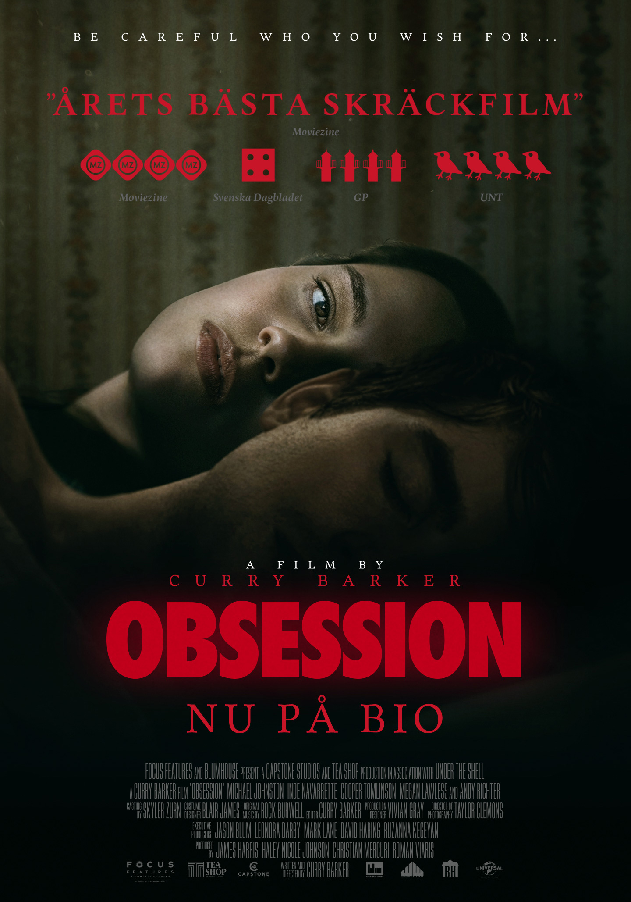

>Premiär: 2025
Regissör: Curry Barker
Skådespelare: Michael Johnston, Inde Navarrette och Cooper Tomlinson
Obsession är en psykologisk thriller om Bear som önskar att hans barndomsvän Nikki ska bli kär i honom. När hans önskan går i uppfyllelse utvecklas relationen snabbt till något mörkt, skrämmande och okontrollerbart.